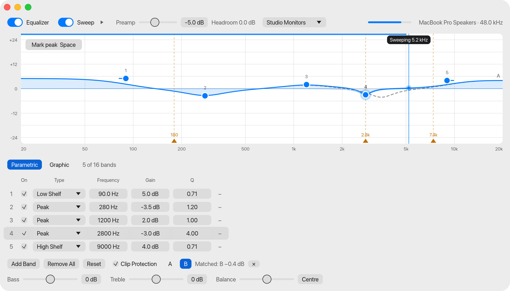

Find resonances in your headphones or speakers with a frequency sweep
A sine sweep glides through the whole frequency range so you can hear where your headphones or speakers ring, then lets you mark the spot and cut it.
Updated 21 November 2026 · Applies to EQ 0.6.0
Why a sweep helps
Music hides resonances because it never plays one frequency by itself. A sweep does exactly that: a pure tone that moves slowly from low to high. Where a driver, an enclosure or an ear cup resonates, the tone suddenly sounds louder, buzzier or harsher. Those are the narrow peaks a parametric equalizer is good at removing.
The sweep in EQ plays through the equalizer, so it also shows what your current curve is doing to each frequency, and it plays in place of system audio while it runs.
Step by step
- Start quietly. Turn the volume down, then switch on Sweep. EQ plays a sine sweep through the equalizer in place of system audio.
- Set the sweep. Open the panel with the arrow next to the Sweep switch to choose a logarithmic or linear sweep and set its range, length and level.
- Listen and mark. Watch the marker move along the curve. When the tone rings, buzzes or jumps out, press Space (or M) to pin that frequency on the curve.
- Cut the peak. Click a pin to add a narrow cut at that frequency.
- Check the result. Run the sweep again, or use Set A and ⌥⌘B to compare before and after at matched volume. Right-click a pin to remove it.

The curve shows where the sweep currently is, and it switches itself off at the end. Each output keeps its own marks, so the pins you set for your headphones are not mixed up with the ones for your speakers.
Tips for good results
- Keep the level modest. A sweep concentrates energy at one frequency at a time. Start low and raise it only as far as you need.
- Sweep more than once. The first pass tells you roughly where; a shorter, slower sweep over a narrower range tells you exactly.
- Cut narrowly, and as little as works. The pin's cut is narrow on purpose. Scroll over a band to widen or narrow its Q, and drag it to adjust the depth. Check against music before you trust it.
- Mind the headroom. Cuts do not run out of room the way boosts do, but the top bar still shows the headroom if you also add boosts.
- Trust your ears over the picture. What you hear depends on the device, how it sits on your head and your own hearing. The marks are a starting point for tuning, not a measurement.
Sweep, then correct
A sweep and a measured correction complement each other. Start from an AutoEq profile for your headphone model, then use a sweep to find anything left that bothers you on your unit. See also the headphone equalizer guide.
Frequently asked questions
What is a frequency sweep?
A sine tone that glides from a low frequency to a high one. Where your headphones or speakers resonate, the tone sounds louder or harsher, which shows you where a narrow cut may help.
How do I mark a peak while the sweep plays?
Press Space or M when it rings. The frequency is pinned on the curve. Click the pin to put a narrow cut there, and right-click it to remove it.
Does the sweep play through my normal audio?
It plays through the EQ in place of system audio, and switches itself off at the end.
Are my marks kept per output?
Yes. Each output keeps its own marks.
Free, open source, no account. macOS 14.2 or later.
Download EQ for macOS